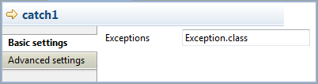

|
Component Family |
Exception | |||
|
Function |
cTry offers Java's exception handling abilities by building Try/Catch/Finally blocks. | |||
|
Purpose |
cTry is designed to build Try/Catch/Finally blocks to handle exceptions. | |||
|
Usage |
cTry is used as a middle component in a Route. | |||
| Connections | Try | Select this link to isolate the part of your Route that is likely to throw an exception or exceptions. | ||
| Catch |
Select this link to catch any exception thrown in the Route. In the Exceptions field, type in an expression to filter the type of exception to catch.
| |||
| Finally |
Select link to execute final instructions regardless of any exceptions that may occur in the Route.
| |||
| Route | Select this link to route all the messages from the sender to the next endpoint. | |||
|
Limitation |
n/a | |||
![[Note]](../images/note.png)
In this scenario, the content of each file sent from the message sender to the receiver is checked and if any file does not meet the content requirement, an exception is thrown and the relevant information is displayed on the console.
From the Messaging folder of the Palette, drop twocFile components onto the design workspace, one as the message sender and the other as the message receiver.
From the Exception folder, drop a cTry component onto the design workspace to build Try, Catch and Finally blocks.
From the Processor folder, drop two cProcessor components onto the design workspace.
Link the cFile component serving as message sender to the cTry component using a Row > Route connection.
Link the cTry component to one cProcessor using a Row > Try connection. This cProcessor component will throw an exception if any file coming via this connection does not contain the required content.
Link the cTry component to the other cProcessor component using a Row > Catch connection to catch the exception. This cProcessor component will display the information related to the exception and the file name that does not contain the required content.
Link the cTry component to the receiving cFile component using a Row > Finally connection.
Label the components according to their roles in the Route.
Double-click the cFile component labeled Sender to open its Basic settings view in the Component tab.

In the Path field, fill in or browse to the path to the folder that holds the source files.
From the Encoding list, select the encoding type of your source files. Leave the other parameters as they are.
Repeat these step to define the output file path and encoding type in the Basic settings view of the other cFile component, which is labeled Receiver.
Double-click the cProcessor component labeled Throw_exception to open its Basic settings view in the Component tab, and customize the code in the Code area to throw an exception and display relevant information if any file coming via the try connection does not meet the content requirement, as follows:
String body = exchange.getIn().getBody(String.class); System.out.println("\nTrying: "+body); Exception e = new Exception("Only 'Talend Integration Solutions' is acceptable. Please check the file:"); if(!"Talend Integration Solutions".equals(body)){ throw e; }else{ System.out.println("File is good."); }Click the catch connection and then the Component tab to open its Basic settings view, and fill the Expression field with an expression to specify the type of exception to catch.
In this scenario, fill in
Exception.classto catch any exception thrown.Double-click cProcessor component labeled Show_exception to open its Basic settings view in the Component tab, and customize the code in the Code area to display the exception information and the related file name, as follows:
System.out.println(exchange.getProperty("CamelExceptionCaught")+ " " + exchange.getIn().getHeader("CamelFileName"));Click Ctrl+S to save your Route.
Click the Code tab at the bottom of the design workspace to check the generated code.

As shown above, while messages are routed
fromthe sender.tothe receiver,.doTry(),.doCatch()and.doFinally()blocks are built bycTry_1. Thus, when any file does not meet the content requirement, an exception is thrown and caught, before each file is finally routed to the receiver.Press F6 to execute the Route.

RESULT: When a file that does not meet the content requirement is detected, an exception is thrown, and the exception information is displayed on the console. Regardless of the exception, all the files from the sender are sent to the receiver.